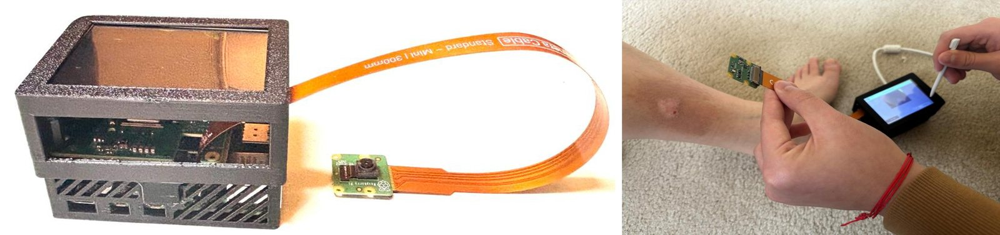

Add a dermoscopic photo and what you know about the patient. SkinScan AI scores it for melanoma, other skin cancers and benign lesions, then suggests how soon to refer.
The photo stays on this device. Scans without a profile are not saved.
Try a sample
Biopsy-confirmed ISIC images the model never trained on.
1Photo
2Patient details
3Result
Model scores
The top two scores are close, so the model is unsure between them.
Without patient details
Biopsy result for this sample
How SkinScan AI works
A dermatologist never judges a lesion from the picture alone. Age, body site, and skin type change what a spot is likely to be, so SkinScan AI reads the image and those details together.
Image branch
Dermoscopic photo
Resized to 380 by 380 pixels, then an EfficientNet-B4 backbone, channel attention, and GeM pooling turn it into 1,792 features.
Patient branch
17 patient features
Age, sex, body site, lesion size, skin type, and melanocytic look pass through dense layers of 256, 128, and 64 units.
Fusion
Three scores
Both branches join and pass through layers of 768, 384, and 128 units to give melanoma, benign, and other skin cancer scores.
Training data
45,400 dermoscopic and close-up images from the public ISIC Archive, every one confirmed by a biopsy rather than a visual impression. They come from clinics in Europe, the Americas, and Australia.
Benign
20,344
moles, benign keratoses, dermatofibromas
Other skin cancer
14,210
basal and squamous cell carcinoma
Melanoma
10,846
The model trained on 36,320 images and was checked on 9,080 it never trained on, over 218 epochs in six stages.
Results on 9,080 validation images
AUC, all three classes
93.2%
AUC, melanoma
0.940
Melanoma sensitivity
90.0%
Melanoma specificity
81.5%
Overall accuracy
78.6%
Sensitivity and specificity use a melanoma cutoff of 0.278 instead of the usual 0.5. Missing a melanoma costs far more than an extra referral, so the cutoff trades some false alarms for catching 9 in 10 melanomas.
What it can't do
It does not diagnose. Only a biopsy does. Use the result to help decide who to refer first.
Darker skin is under-represented. Only 10 of the 3,219 training records that list a skin type are type V or VI.
The melanocytic answer carries a lot of weight. In the training data, lesions marked melanocytic were never basal or squamous cell carcinoma, and lesions marked not melanocytic were almost never melanoma.
The validation set also chose the best epoch and the cutoff, so real-world numbers are likely lower. On 78 newer ISIC images it never saw, it flagged 1 of 5 melanoma in situ images (from two lesions), flagged all 3 images of one benign mole as possible melanoma, referred 23 of 40 basal cell carcinomas, and called 17 of 30 seborrheic keratoses routine.
It expects a dermoscopic close-up of one lesion, not an ordinary phone photo from far away.
Privacy
The 21 MB model downloads once, and then every scan runs on your device with ONNX Runtime Web. Photos and patient details are never uploaded. Profiles, patients and saved scans live only in this browser. With a passcode they are encrypted with AES-GCM under a key derived from it, and the key is never stored. After the first visit the app works offline.
The same trained model runs on the SkinScan kiosk, a Raspberry Pi device built for clinics.
The SkinScan kiosk
Some clinics have no reliable internet and no spare computer. The kiosk is a self-contained version of SkinScan AI that costs about $300 in parts and runs with no network at all.

The assembled kiosk and the device in use.
Hardware
Computer
Raspberry Pi 5, 8 GB
AI accelerator
Hailo-8L, 13 TOPS, on an M.2 HAT+
Camera
Raspberry Pi Camera Module 3
Screen
3.5 inch touchscreen
Case
3D printed
Parts cost
About $300
Software
A Python Flask service runs the model with LiteRT. A pygame interface shows the result on the touchscreen, and the Pi starts both automatically at boot, so staff only have to plug it in.
Capture, preprocessing, inference, and display all happen on the board. No image is uploaded anywhere.